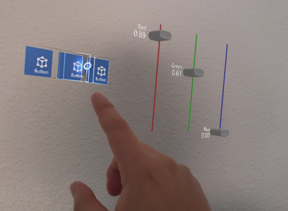
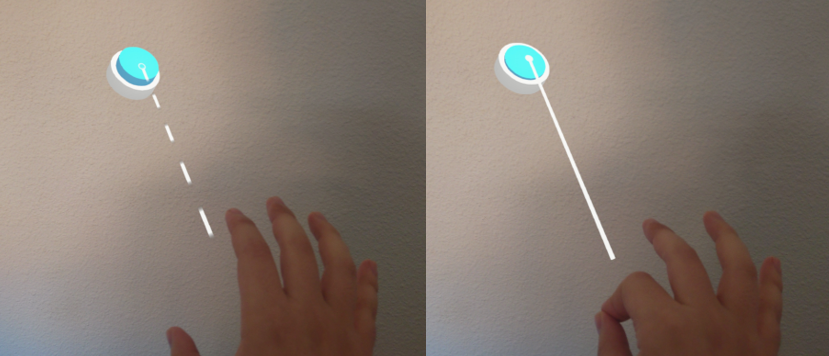
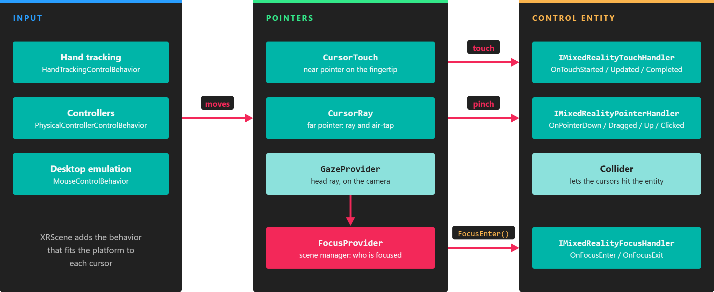

Pointers and control
 |
 |
|---|---|
| Near pointer | Far pointer |
MRTK replaces the mouse pointer with pointers that follow the user's hands and controllers. XRScene creates them for you, one near and one far pointer per hand, so your controls react to touch, pinch, and gaze without extra setup.
Interaction modes
- Near interaction. When the hand is close to a control, the user touches it with the tip of the index finger. The near pointer (
CursorTouch) is a small sensor sphere attached to that fingertip. - Far interaction. When the control is out of reach, the user points at it with a ray that comes out of the hand or controller. The far pointer (
CursorRay) casts that ray and places a cursor where it hits. Pinching the thumb and index finger, the air-tap gesture, clicks the control under the cursor. - Gaze. The
GazeProvidercomponent, added to the camera byXRScene, casts a ray from the user's head. Controls that implement focus events also react when the user looks at them.
On devices with hand tracking, the pointers follow the tracked index fingertip. With physical controllers, XRScene creates a second set of pointers attached to each controller.
How pointer events reach your controls
Pointers find controls through the physics engine: each cursor is a sensor body, and a control needs a collider so the cursor can hit it. When a cursor enters, touches, or clicks an entity, MRTK calls the handler interfaces implemented by the components on that entity.

Input moves the cursors, the cursors hit colliders, and MRTK calls the handler interfaces on the entity that was hit.
See Creating custom controls for the events each interface receives.
Desktop emulation
You can test MRTK in a Windows desktop profile without a headset. When no XR input tracking is available, XRScene adds a MouseControlBehavior to each hand pointer, and the mouse and keyboard drive them:
| Input | Action |
|---|---|
| Hold Left Shift | Activates the right-hand pointer. Move the mouse to move it. |
| Hold Space | Activates the left-hand pointer. Move the mouse to move it. |
| Mouse wheel (while a pointer is active) | Moves the pointer closer to or farther from the camera. |
| Left mouse button (while a pointer is active) | Pinches, which performs the air-tap on far controls and grabs objects. |
| Hold Left Ctrl (while a pointer is active) | Rotates the active pointer with the mouse instead of moving it. |